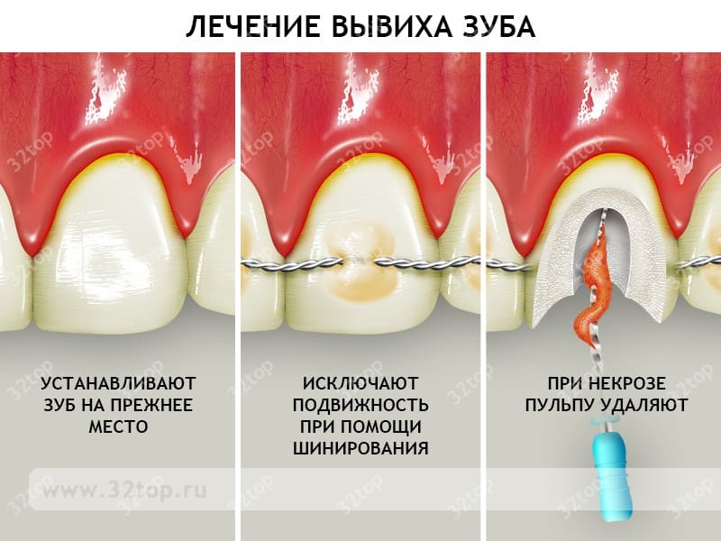
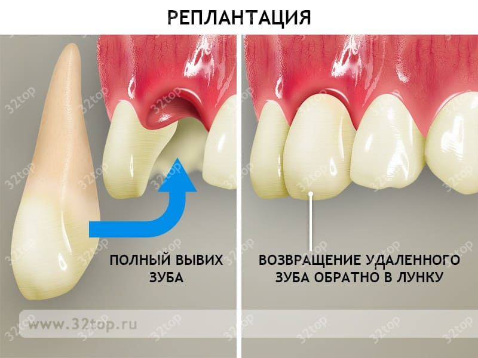

Малыши, начинающие ходить, и дети постарше, запинающиеся и падающие, часто натыкаются на углы столов двумя передними зубами. В большинстве случаев эти сдвинутые при ударе назад зубы возвращаются в свое нормальное положение и выходят живыми еще из многих падений, пока не уступят свое место постоянным зубам пять лет спустя.
Если ваш ребенок повредил десны и зубы, приложите пакет со льдом или дайте ребенку мороженый леденец, чтобы помочь опухшим деснам.
Если из десен течет кровь, смочите кусок бинта холодной водой и проложите его между губами и деснами, надавив на место, из которого идет кровь. Позвоните своему стоматологу, если требуется срочно выровнять зубы.

Если зубы оказались вогнанными слишком глубоко в десны, могли пострадать корни, и жизнь таких зубов будет укороченной (о чем свидетельствует постепенное потемнение и расшатывание зуба). Опять же, проконсультируйтесь со стоматологом.
Кроме того, следите, не образуется ли абсцесс (признаками являются высокая температура и припухлость, болезненность десен над поврежденным зубом), который может возникнуть в травмированном месте три—семь дней спустя.
Если зуб расшатался настолько сильно, что держится буквально на ниточке и явно не выживет, ваш стоматолог может предложить удалить его незамедлительно из опасения, что во время сна выпавший зуб может попасть в дыхательные пути ребенка. Выбитый молочный зуб реимплантировать нельзя.
Если молочный зуб сломался и остались острые, колючие края, иногда стоматолог может порекомендовать шлифовку острых краев, чтобы предотвратить ранение губы при следующем падении.
Постоянный же зуб зачастую можно реимплантировать, но решающее значение здесь имеет уход за зубом по дороге к стоматологу. Возьмите зуб за коронку, ни в коем случае не за корень.

Если зуб очень грязный, осторожно смойте загрязнения водой (только не над открытым стоком), погрузите зуб в слюну ребенка и положите в надежную емкость.
Не чистите и не скребите корни выбитого зуба, поскольку тем самым вы можете повредить корни и сделать реимплантацию зуба невозможной.
Марта, Уильям, Роберт, Джеймс Сирс"Ваш малыш от рождения до двух лет"